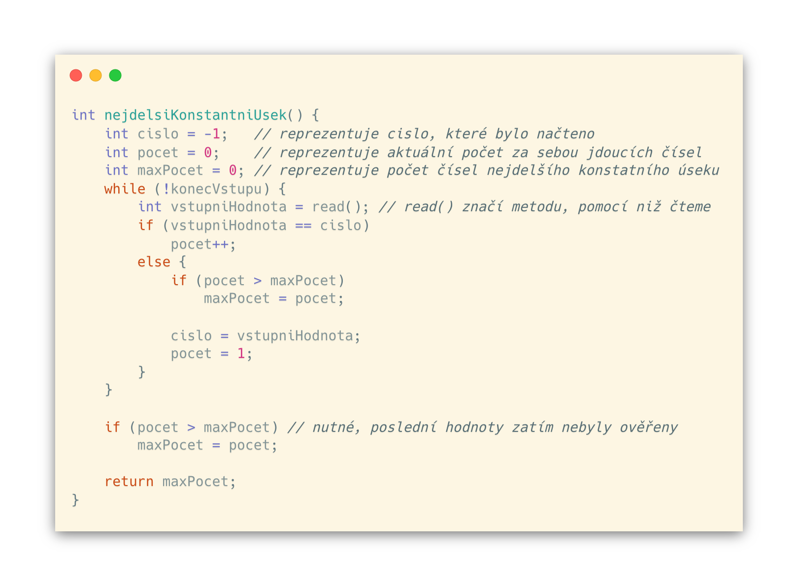

V této kapitole se podíváme na základní techniky při práci s daty, která přicházejí v reálném čase aniž bychom je nejdříve ukládali do pole.
ROZDĚLENÍ ALGORITMŮ
Dříve, než se pustíme do tvoření algoritmů, je nutné si uvědomit, v čem jsou tyto specifické. K tomu nám pomůže jejich dělení.
Algoritmy můžeme rozdělit do dvou základních kategorií na:
- ONLINE ALGORITMY
- LOKÁLNÍ NEBO "OFLINE" ALGORITMY
Online algoritmy zpracovávají data v reálném čase bez ukládání proměnných do polí nebo jiných datových struktur. V praxi se používají asi nejčastěji při čtení ze souborů, kdy samotný soubor čteme po slovech/číslech. Pokud se podíváme do historie, tyto algoritmy byly hojně využívány, když počítače ještě neměli dostatečně velké paměti RAM. Data se tak načítala přímo z pevných disků.
Lokální algoritmy využívají k práci s daty datové struktury, do kterých jednotlivé proměnné ukládají. Tzn. používají pole, seznamy, mapy a další. Jsou tedy náročnější na paměť, protože data drží po celou dobu jejich práce.
PŘÍKLAD ONLINE ALGORITMŮ
Nalezení délky maximálního konstatního úseku čísel
Nyní si ukážeme algoritmus, který nalezne nejdelší konstatní úsek čísel přicházejících ze vstupu. Algoritmu bude ukládat počet za sebou jsoucích čísel, a když se na vstupu objeví nové číslo, zkontroluje, jestli to nebyl zatím nejdelší úsek. Když ano, pak uloží jeho délku, jinak pokračuje s dalším číslem. Na konci, až projde všechna data, znovu ještě jednou ověří, zda poslední úsek nebyl nejdelší, neboť tak neučinil, když while smyčka skončila.
